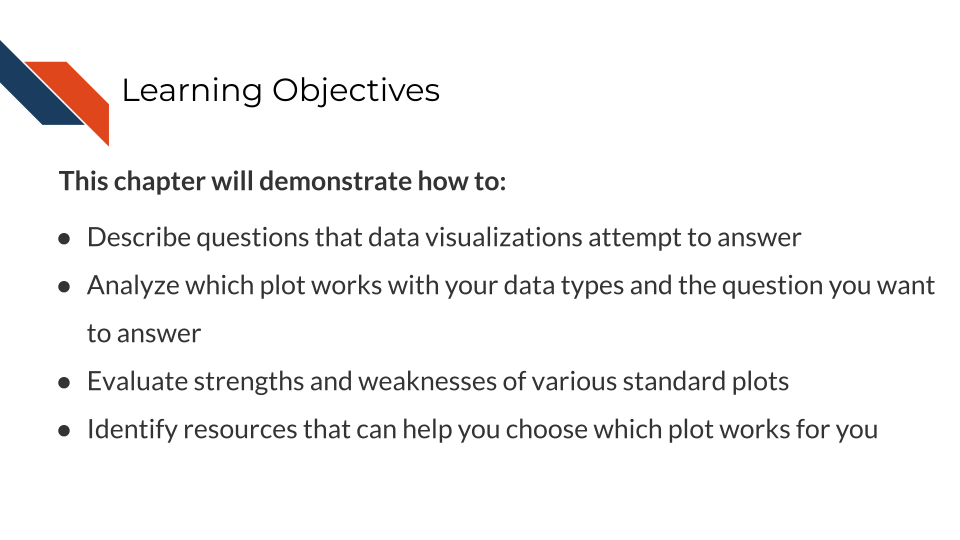
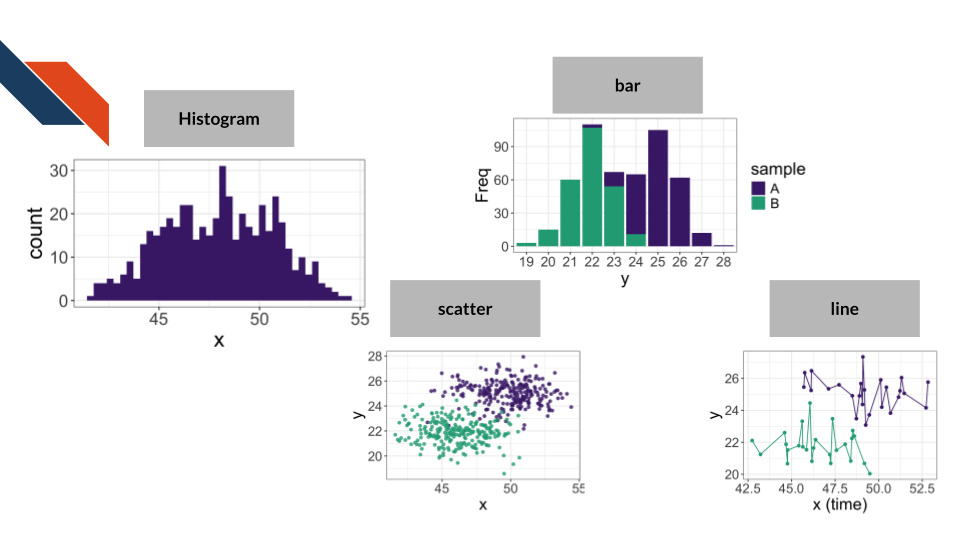
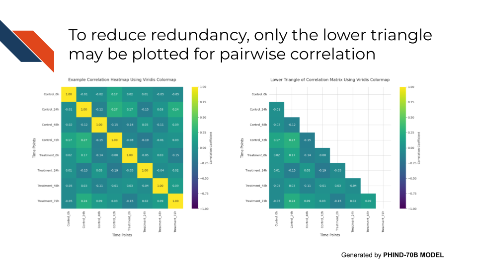

4 Choosing the Right Plot
A data visualization represents data in a simplified way by encoding that data with textual and graphical design elements which are then combined in a specific layout. Each plot type has a certain combination of the design elements and an associated typical configuration. The design elements act as building blocks for the overall data visualizations.
Therefore, deciding which design elements and plot type to use depends on:
- The type(s) and amount of data that you’re visualizing
- the question you are trying to answer or message you want to communicate
The previous chapter discussed the types of data and how those are encoded or appropriate visual design elements to represent certain types of data. This chapter discusses the questions typical visualizations can answer and puts together all of the considerations in describing standard plot types.
4.1 Learning Objectives
4.2 Goals of Data Visualization
There are many different possible goals for creating a data visualization. Among those include
- looking at a distribution
- showing a correlation or other relationship between variables
- finding a ranking
- displaying change over time or after an intervention
- indicating location and spatial relationships or distributions
4.3 Standard Graph Types
Standard graph types include conventional graphs like histograms, scatter plots, bar plots, and line charts as well as other graphs used to look at distributions or find rankings or used to consider group composition, complex relationships, and response. For the conventional plots, this section will describe the appropriate kinds and amount of data needed to use that plot type as well as questions that plot type can be used to answer. For the graphs beyond those four, additional information will be provided such as a description, strengths, weaknesses, and alternative plots.
Conventional graph types include histograms, scatter plots, bar plots, and line charts. Each of these are used to answer a different question.
| Histogram | Scatter plot | Bar plot | Line chart | |
|---|---|---|---|---|
| Primary type of data | Numerical | Numerical | Numerical & Categorical | Numerical |
| Minimum number of variables | 1 | 2 | 2 | 2 |
| Primary data encoding | Area and Position | Point and Position | Area & Labels/Position | Line and Position |
| Goal | looking at a distribution | showing a correlation | finding a ranking | displaying change over time |

Additional data and data encodings for conventional graph types
A histogram may visualize more than one distribution within the same visualization. In that case, the dataset will have categorical data and more than one variable. Such a visualization would likely incorporate color or patterns and should increase opacity/transparency.
A scatter plot may have categorical data that can be encoded with shape or color. Any additional numerical variables beyond the minimum of 2 (one for the x-axis and one for the y-axis) could be encoded with size or color (using a sequential color palette).
A bar plot tends to have categories and counts for those categories (two variables, one categorical and one numerical), though a dataset may have just the categories which would need to be counted (which some visualization software can do this for the researcher). Additional data could represent some grouping or categorization of the categorical data (another categorical variable) in which case color may be used to encode that additional variable.
A line chart may or may not use points in addition to lines. It is good practice for the researcher to display the data points and not just the lines connecting them. If the dataset contains additional variables beyond the minimum of 2 (one for the x-axis and one for the y-axis), categorical data could be encoded with shape or color while numerical data could be encoded with size or color (using a sequential color palette).
4.4 Ranking and Distribution Plots
Of the conventional plots described above, bar plots and histograms both fit within this category. Bar plots are typically used to find a ranking while histograms display a distribution. Ranking and distribution plots are often, but not exclusively, used for exploratory data analysis and internal visualizations. If presented as an expository visualization, these plots will usually supplement or support a more complex figure, perhaps as a subpanel within that larger figure. Even if ranking and distribution plots are rarely the focal point, they are a powerful tool in the researcher’s data visualization toolbox to profile data characteristics and compare groups.
4.4.1 Violin Plots
Description: Displays the density of data where narrow sections correspond to lower density and wider sections correspond to higher density. The plots generally resemble the outline of a violin.
When to use Violin plots:
- Numerical data (may have categorical data if looking at multiple distributions)
- Minimum of 1 variable
- Best with minimal number of categories
- Primary data encodings are area and position
- Used to show distributions and rank groups
Strengths of Violin plots include:
- Better at comparing multiple distributions than histograms (the conventional plot type)
- Displays distribution shape such as skew and modes better than boxplots do
Weaknesses of Violin plots include:
- Doesn’t show individual data points
- Limited usefulness when there’s little amounts of data (e.g., few records/patients/samples)
- The method for creating the density visualization is a bit arbitrary
Alternatives for Violin plots include:
- Boxplot (especially with jitter to show individual data points)
- Ridgeline plot
- Raincloud plot
An example of the Violin plot in the biomedical, bioinformatics, or cancer informatics literature is Figure 5c from Taylor et al. (2024) showing the expression of a tumor suppressor gene based on the genotype of an eQTL associated SNP.
Notice that this specific example of the violin plots have inlaid boxplots.
4.4.2 Boxplots (with jitter)
Description: Boxplots use a box to delineate the median and quartiles of the data with whiskers to display the range and potentially points for outliers. A “jitter” can be utilized to include points for each data point.
Jitter and Randomness
Inclusion of jitter typically uses randomness to space the points over the box so you may need to set a random seed in your analysis to ensure the visualization appears exactly one way consistently. However, it’s not a major problem if the jitter points move on a plot as they’ll have the same numerical axis location, only moving within the categorical axis.
set.seed() is a base R function that is used to set a random seed within R: set.seed() documentation
random.seed() from the random module in Python is used to set a random seed within Python: random.seed() documentation
If using the numpy package, the numpy.random.default_rng() function can be used to instantiate a random number generator, though the seed should be passed a parameter: numpy.random.default_rng() documentation
When to use Boxplots:
- Numerical data (may have categorical data if looking at multiple distributions)
- Minimum of 1 variable
- Best if used with intermediate to large sample sizes
- Primary data encodings are lines and points
- Used to show distributions and rank groups
- Shows the data as well as helpful summary statistics and overall variation
- Can quickly spot outliers
- Can compare groups efficiently
- Doesn’t show multiple modes as well as violin plots
- Quartiles may not be familiar concepts for general audiences
- Outliers need further investigation
- Violin plot
- Histogram
- Ridgeline plot
- Strip plot (shows the individual data points only)
- Raincloud plot
- Swarm plot
An example of the Boxplot in the biomedical, bioinformatics, or cancer informatics literature is Figure 1 from Brown et al. (2014) showing the distribution in the number of mutations for each cancer patient based on cancer type. Notice that the boxplots utilize the visual channel of size through the width of the box to reflect how many patients are represented within each group.
Another example of the Boxplot in the biomedical, bioinformatics, or cancer informatics literature where jitter is used to display the actual data points in addition to the box summary statistics is Figure 4d from Hu et al. (2020). These boxplots show the estimated seeding time relative to the diagnosis of the primary tumor for two types of metasteses – synchronous and metachronous. Synchronous metasteses are discovered around the same time as the primary tumor while metachronous metastases are discovered after the primary tumor has been diagnosed, treated, and perhaps surgically removed. The seeding time refers to when primary tumors shed cells that would establish metasteses.
These boxplots show that synchronous metastases seeding times occurred earlier than metachronous metastases. Note how the authors use a label along the y-axis to translate the seeding time estimates into a categories of early and late to increase the clarity of the figure for the audience.
4.4.3 Ridgeline Plots
Description: Shows the distribution of multiple categories of numerical data, using densities (half a violin). Looks like stacked, but slightly offset mountain ridges.
When to use Ridgeline plots:
- Numerical data (with categorical data for groups)
- Minimum of 2 variables
- Best with a higher number of categories
- Primary data encodings are area and position
- Used to show distributions and rank groups
- Efficiently displays distributions for many groups or categories
- Shows distribution shape (e.g., skew and modes)
- Can be cluttered if there is too much overlap between groups or not a clear ordering of the categories
- Good for general comparison among groups, but not for finding precise quantitative differences
- The method for creating the density visualizations is a bit arbitrary
- Boxplot (especially with jitter to show individual data points)
- Strip plot
- In some cases, a sorted heatmap
- A table may be better if you need to make quantitative comparisons
An example of a Ridgeline plot in the biomedical, bioinformatics, or cancer informatics literature is Figure 6H from Xing et al. (2025) showing the distribution of various myeloid cell state scores (M1 macrophage, M2 macrophage, angiogenesis, and phagocytosis) following analysis of single cell RNA sequencing data for certain pre-defined gene sets. Specifically, each of these ridgeline plots is comparing the distributions of the cell state scores for Brain metastases (BrM) against those of primary tumors (PT).
This example highlights the utility of Ridgeline plots in making comparisons between a small number of groups (2 - BrM vs PT) for several categories (4 - the cell state scores), leading to a large number of overall comparisons even if there are only a few groups involved in each comparison. Within this example, some of the comparisons show high similarity between the groups (e.g., M1 score), while others depict larger differences (e.g., phagocytic score). Notice the use of faceting to split out ridgeline plots into different panels or subplots for the cell state score categories and the use of color to signify the BrM and PT groups.
Another example of a Ridgeline plot in the biomedical, bioinformatics, or cancer informatics literature is Figure 2B from Lozada et al. (2025) showing the distribution of expression of various possible precision therapy targets within different tissues, specifically comparing observed expression of the targets for Neuroendocrine neoplasms (NEN) and adenocarcinomas (ADC) environments.
This example again uses faceting to separate out some comparisons into subplots or separate panels – in this case separating out different tissues. It still uses color to distinguish groups (NEN vs ADC), however those groups are plotted within the same strip, and separate strips are stacked for the different potential therapy targets, making comparisons across many different targets within each subplot. The targets are both ordered and spaced in such a way that there is a clear progression in distributions without the figure appearing too cluttered. The use of faceting aides in making this plot less complicated and cluttered than it otherwise might be.
4.4.4 Raincloud Plots
Description: Combines 3 plots: density, boxplot, individual data points. Generally looks like a raining cloud.
When to use Raincloud plots:
- Numerical data (with categorical data for groups)
- Minimum of 1 variable
- Best with minimal number of categories
- Primary data encodings are area, lines, and points
- Used to show distributions and rank groups
- Show density/distribution shape as well as individual data points and common summary statistics – so much information
- Works well with small datasets
- A lot is going on
- Harder to interpret and cluttered or squished if there are more than a few groups
- Violin plot
- Boxplot (especially with jitter to show individual data points)
- Swarm plot
An example of a raincloud plot in the biomedical, bioinformatics, or cancer informatics literature is Figure 4 from Bouron et al. (2022) comparing the distributions of various primary tumor features (e.g., SUVPeak, TLG, Entropy, LRE) as measured by different Positron emission tomography/computed tomography (PET/CT) systems (D690, DIQ5, & DST) for a retrospective cohort of patients (n=111) with nonmetastatic triple negative breast cancer (all of whom were examined at a specific comprehensive cancer center within a specific date range).
Note that color is used to distinguish the different PET/CT systems and faceting or subplots separate out the various primary tumor features. This specific example utilizing a raincloud plot is quite fitting because an unequal number of patients were examined across the three PET/CT systems (49, 17, 45) – therefore showing the data within each feature for each of the systems is especially useful.
4.4.5 Strengths Overview
The strengths of the plots that help you visualize distributions and compare groups
Violin plots are good if you want to look at distribution characteristics (e.g., skew or multimodality) at a glance.
Boxplots are great if you want to see the data and general summary statistics (e.g., median).
Ridgeline plots are great at comparing distributions of lots of groups.
Raincloud plots are great when you want to go deep and see everything for a small number of groups (exploratory analysis).
4.5 Group Composition, Complex Relationships, and Response Plots
Of the conventional plots described above, scatter plots and line charts both fit within this category. Scatter plots are usually used to display a response as well as complex relationships while line charts may show a response or change over time. Plots within this category are more frequently expository data visualizations than exploratory data visualizations. These plots are often less intuitive for an audience to interpret without guidance. Therefore the polishing and refinement steps as well as including informative titles, captions, and labels are especially important when designing and building visualizations within this category.
4.5.1 Stacked Bar Charts
Description: Displays multiple categories within a single bar, stacked on top (vertical) or next to (horizontal) each other. Each overall bar represents a group. Within bars, each stack is a sub-category or subgroup.
When to use Stacked Bar charts:
- Numerical data with categorical data for groups
- Minimum of 2 variables
- Primary data encodings are bars, position, and color or pattern
- Used to find a ranking or change over time
- Compare sub-categories within a bar or consider how sub-category contribution to the total bar composition changes over time/across bars
- Avoid if you have a lot of sub-categories or want to compare individual sub-categories to each other
- If using more than a couple of categories, consider using proportions (that sum to 100%) on the numerical axis
- Summarizes complex group composition in a compact way
- Can compare composition over time or across groups
- Difficulty comparing subgroups that aren’t aligned or in the middle of the overall bar
- If one subgroup contributes too much, it can dwarf other subgroups; similarly, if the groups have uneven sizes, it can dwarf other groups
- If the numerical axis uses proportions, raw numbers aren’t visualized
- Grouped bar chart
- Lollipop plot
- Line chart
- A table
- A waterfall plot for the most important sub-category
An example of the stacked bar chart in the biomedical, bioinformatics, or cancer informatics literature is Figure 1 from Boutros et al. (2025) showing the relationship between age the receipt for surgery for patients with non-metastatic gastric and esophageal cancer – specifically showing the trend of an increase in contraindication or refusal of surgery as age increases.
Another example of the stacked bar chart in the biomedical, bioinformatics, or cancer informatics literature is Figure 4b from Janesick et al. (2023) showing cell type composition within three regions of interest identified in a histopathology specimen. Two of the regions are ductal carcinoma in situ (DCIS) while the third represents tumor invasion in ductal carcinoma (invasive). In this example, the authors were able to identify differences in cell composition for the regions of interest (including some cell types seemingly being restricted to DCIS regions but not invasive regions). However, examples like these may be difficult to interpret when subgroups (e.g., the red for invasive) are not aligned across groups / bars or if it is unclear to what extent small proportions differ between groups / bars.
4.5.2 Heatmaps
Description: A visualization (typically two dimensional – with rows and columns – of a table or matrix) using color. Always uses colors to display numbers or categories; the two dimensional matrix while typical is not a requirement, because the two dimensions could be a map projection or tissue sample.
Heatmaps are frequently used to show gene expression across samples or cell types for a selection of genes. They may also be used to display the pairwise correlation of many samples, genes, cell types, or features compared amongst themselves (e.g., sample to the other samples, gene to the other genes, cell type to the other cell types, or feature to the other features).
Note that a confusion matrix is a specific type of heatmap which is used evaluate the performance of a machine learning classification model.
When to use Heatmaps:
- Categorical or numerical data or a mixture
- Minimum of 3 variables
- Primary data encodings are color and position
- Used to look at a distribution across samples or change over time/after an intervention
- May also exhibit pairwise correlation for many groups
- Not recommended if you need to know or display actual values
- Often used together with hierarchical clustering or reordering sample location to highlight trends or areas of similarity
- Provides a broad overview to identify trends, areas of density, sparsity, or outliers
- Efficiently and compactly simplifies complex data into one visualization
- The “matrix” aspect can be difficult for viewers to grasp
- Rearranging data can be helpful but also misleading if not described
- Actual values and summary stats are rare/difficult to display if there are many rows and columns
- A table
- Scatter plot
- Line plot
- Bubble charts if another dimension is needed
- Parallel plot
An example of a heatmap in the biomedical, bioinformatics, or cancer informatics literature is Figure 3k from Janesick et al. (2023) showing the relative expression of Xenium panel genes across different cell types within the spatial transcriptomics / Xenium dataset. Rows within the heatmap represent different cell types and columns represent the genes from the panel. Color is used to represent z-scores for the relative expression with dark purple signifying higher z-scores and yellow signifying lower z-scores.
If another dimension of data were needed, a bubble chart could be utilized like this example in Supplemental Figure S5C from Ford et al. (2024) which uses color to represent the average expression of certain cell type marker genes across cell types. However, it also represents the number of single cells which expressed that marker gene utilizing the size of points. Notice a large red circle represents a gene that is highly expressed in that cell type for many single cells within the sample. Whereas a large tan circle represents a gene that was lowly expressed in that cell type for many single cells within the sample. Finally, a small circle will represent a gene whose expression level (whatever it is) was not observed in many single cells within that sample.
In this example, the marker genes are represented within the rows and the different cell types are represented within the columns (inverting the order from the previous example).
An example of a pairwise correlation heatmap in the biomedical, bioinformatics, or cancer informatics literature is Figure 1 from Nelson et al. (2024) showing the pairwise Spearman correlation values between immune cell subtypes. Perfect correlation is observed on the diagonal as would be expected. Moderate to high correlation is observed between every subtype excluding the CD68 positive ligand negative subtype where low to no correlation is observed with other subtypes.
Pairwise correlation: Full matrix vs lower triangle for pairwise correlation
If using a heatmap to display pairwise correlation between different groups (e.g., samples), the heatmap will be symmetrical and present redundant information (each correlation would be displayed twice) because the correlation of A to B is the same as the correlation of B to A. The diagonal will always have perfect correlation because it would be comparing a sample or variable to itself. If looking at just the lower triangle, it presents the pairwise correlation only once and removes the redundant information.

4.5.3 Sankey Diagrams
Description: Represents the “flow” or movement of quantities (e.g., patients or samples) among different categories through different steps (e.g., demographics or steps of an analysis or trial)
When to use Sankey diagrams:
- Categorical data and sometimes numerical data/counts
- Requires several variables
- Primary data encodings are lines, area, and color. The width of the lines relate to the size of the categories.
- Used to show change over time
- Best with datasets with some sort of longitudinal data or time points with categories at each time point
- Example uses include tracking patient response or symptom trajectories as well as patient cohort stratification
- Provides a lot of information about the study population and shows all possible paths
- Provides a visual or graphical representation of data that would otherwise be in a table or just described in text
- Difficult or complex to interpret
- Flows that cross or overlap or flows with similar widths can be difficult to compare though interactivity can alleviate this
- Diagrams don’t always clearly and explicitly display sample dropout (discontinue treatment, etc.)
- Often require specialized tools to create visualization
- A table
- Stacked bar charts, but these lose the connection/possible path aspect
- Flowcharts
- Treemaps
- Other graphical visualizations or some custom made visualization
An example of a Sankey diagram for patient cohort stratifications in the biomedical, bioinformatics, or cancer informatics literature is Extended Data Figure 1 from Hu et al. (2020). This example does not have a strong time dependence, instead showing different patient cohorts represented in the data specifically related to the primary tumor site, the metastasis site, and the treatment status for the metastatic tumor. Even without a strong time dependence this figure works well, showing what combinations of characteristics within those categories are represented within the dataset.
An example of a Sankey diagram for symptom trajectories in the biomedical, bioinformatics, or cancer informatics literature is Figure 2Aii from Otto et al. (2022). This example has a strong time dependence, showing how the frequency of a specific symptom changes over time for a set of patients. Importantly, every patient is represented within this diagram from start (Baseline) to finish (6 months) because of the “Discontinued” category. This is not saying the symptoms had discontinued because we see that some who had reported frequent occurrence of the symptom at 3 months report never for a frequency at 6 months; rather this “Discontinued” is reflecting patients whose symptom frequency is no longer tracked because they discontinued their participation in the study.
An example of a Sankey diagram for treatment trajectories in the biomedical, bioinformatics, or cancer informatics literature is Figure 3 from Beckmann et al. (2021). This figure again has a dependence on time, in this case time relating to a sequence of treatments. Note however that not every patient is represented within this diagram throughout the whole sequence. There is no clear category marking living individuals who discontinue or no longer need treatment.
4.5.4 Strengths Overview
The strengths of the plots for group composition, complex relationships, and response
Stacked bar charts are good if you want to look at how subgroup composition changes at a glance over time, but it is less useful with lots of subgroups.
Heatmaps are good if you have at least 3 variables that you need to visualize and want to use color as the primary means to communicate the point of the visualization (e.g., the range of values, correlation, areas of density, patterns across groups or time)
Sankey diagrams are good if you want to look at the possible trajectories of symptoms, treatments, etc. and it’s important to know what combinations occur.
4.6 Field Standard Plots
There are several common plots that are “field standard” or customarily used within the biomedical field. These plots (including Waterfall plots, Caterpillar plots, Kaplan-Meier curves, Volcano plots, MA diagrams, etc.) plots will be discussed in the final chapter. They often align with the category of group composition, complex relationships, and response plots. When deciding what plot is best for you and your research question, a field standard plot may be the answer given that the audience will be more familiar with such plots.
4.7 Galleries
Galleries can be useful to browse standard plots and learn information about them.
- from Data to Viz Gallery: An example of a gallery that provides visual examples and explanations for necessary data types is the from Data to Viz gallery
- Data Viz Project: An example of a gallery that describes use cases and provides visual examples from many sources for various plot types is the Data Viz Project
- R Graph Gallery: The R Graph Gallery provides visual examples and templates for creating standard plots with the R programming language.
- Python Graph Gallery: The Python Graph Gallery provides visual examples and templates for creating standard plots with the Python programming language.
- SMART App Gallery: For more specialized galleries related to biomedical applications, consider the Substitutable Medical Apps, Reusable Technology (SMART) App Gallery which provides free and open source apps for healthcare providers and researchers to work with and visualize health data. The integrated apps describe specific data types and goals and can provide dashboards and visualizations specifically for those data types/goals.
- Genomics Data Visualization course website: The Genomics Data Visualization course website is another more specialized gallery from the Johns Hopkins University Fan lab which provides featured visualizations meant for working with large-scale single-cell and spatially-resolved omics datasets using R.
- Publications: Journal publications provide a myriad of example visualizations working with field specific data. Reading publications, studying their figures, and critically evaluating the design choices is a wonderful way to improve your own data visualization skills. In the near future, as you read journal articles and look at the figures, ask yourself the following questions:
- What was the goal or overarching message this visualization was meant to communicate?
- What was difficult for me to understand about this figure and what design choices could have made this figure easier for me to follow along?
- What did I like best about this visualization?
- Are these visualizations standard/common plot types or were there any new (at least to me) visualizations? What was unique about them?
4.8 Summary
There are strengths and weaknesses to every kind of plot. Some plots are better for exploratory analysis than for sharing with wide audiences. If exact quantitative values need to be considered, don’t underestimate the power of a good table. When preparing an expository visualization, focus on one message.
Choosing which plot to use may be field, context, and data dependent. Use the simplest or most mainstream plot you can! Make sure that the plot works with your data type(s), number of variables, number of observations (e.g., patients or samples), and the overall goal or research question. Use design tools to develop your visualization before switching to a more complex plot. These design tools include utilizing facets or subplots, dashed lines and text labels, and varying colors, textures, or shapes. Finally, consider browsing a visualization gallery for inspiration!
Beckmann, Kerri, Hans Garmo, Ingela Franck Lissbrant, and Pär Stattin. 2021. “The Value of Real-World Data in Understanding Prostate Cancer Risk and Improving Clinical Care: Examples from Swedish Registries.” Cancers 13 (4): 875. https://doi.org/10.3390/cancers13040875.
Bouron, Clément, Clara Mathie, Valérie Seegers, Olivier Morel, Pascal Jézéquel, Hamza Lasla, Camille Guillerminet, et al. 2022. “Prognostic Value of Metabolic, Volumetric and Textural Parameters of Baseline [18F]FDG PET/CT in Early Triple-Negative Breast Cancer.” Cancers 14 (3): 637. https://doi.org/10.3390/cancers14030637.
Boutros, Christina S., Lauren M. Drapalik, Christine E. Alvarado, Aria Bassiri, Jillian Sinopoli, Leonidas Tapias Vargas, Philip A. Linden, and Christopher W. Towe. 2025. “Is There Bias in the Assessment of Contraindications for Resection? Disparities in the Surgical Management of Early-Stage Esophageal Cancer.” Diseases 13 (2): 37. https://doi.org/10.3390/diseases13020037.
Brown, Scott D., Rene L. Warren, Ewan A. Gibb, Spencer D. Martin, John J. Spinelli, Brad H. Nelson, and Robert A. Holt. 2014. “Neo-Antigens Predicted by Tumor Genome Meta-Analysis Correlate with Increased Patient Survival.” Genome Research 24 (5): 743–50. https://doi.org/10.1101/gr.165985.113.
Ford, Kaitlyn, Elena Zuin, Dario Righelli, Elizabeth Medina, Hannah Schoch, Kristan Singletary, Christine Muheim, et al. 2024. “A Global Transcriptional Atlas of the Effect of Acute Sleep Deprivation in the Mouse Frontal Cortex.” iScience 27 (9). https://doi.org/10.1016/j.isci.2024.110752.
Hu, Zheng, Zan Li, Zhicheng Ma, and Christina Curtis. 2020. “Multi-Cancer Analysis of Clonality and the Timing of Systemic Spread in Paired Primary Tumors and Metastases.” Nature Genetics 52 (7): 701–8. https://doi.org/10.1038/s41588-020-0628-z.
Janesick, Amanda, Robert Shelansky, Andrew D. Gottscho, Florian Wagner, Stephen R. Williams, Morgane Rouault, Ghezal Beliakoff, et al. 2023. “High Resolution Mapping of the Tumor Microenvironment Using Integrated Single-Cell, Spatial and in Situ Analysis.” Nature Communications 14 (1): 8353. https://doi.org/10.1038/s41467-023-43458-x.
Lozada, John R., Andrew Elliott, Mark G. Evans, James Wacker, Kathleen M. Storey, Emily A. Egusa, Nicholas A. Zorko, et al. 2025. “Expression Patterns of DLL3 Across Neuroendocrine and Non-Neuroendocrine Neoplasms Reveal Broad Opportunities for Therapeutic Targeting.” Cancer Research Communications 5 (2): 318–26. https://doi.org/10.1158/2767-9764.CRC-24-0501.
Nelson, Brad H., Phineas Hamilton, Minh Tung Phung, Katy Milne, Bronwyn Harris, Shelby Thornton, Donald Stevens, et al. 2024. “Immunological and Molecular Features of the Tumor Microenvironment of Long-Term Survivors of Ovarian Cancer.” The Journal of Clinical Investigation 134 (24). https://doi.org/10.1172/JCI179501.
Otto, Ethan, Eva Culakova, Sixu Meng, Zhihong Zhang, Huiwen Xu, Supriya Mohile, and Marie A. Flannery. 2022. “Overview of Sankey Flow Diagrams: Focusing on Symptom Trajectories in Older Adults with Advanced Cancer.” Journal of Geriatric Oncology 13 (5): 742–46. https://doi.org/10.1016/j.jgo.2021.12.017.
Taylor, Dylan J., Surya B. Chhetri, Michael G. Tassia, Arjun Biddanda, Stephanie M. Yan, Genevieve L. Wojcik, Alexis Battle, and Rajiv C. McCoy. 2024. “Sources of Gene Expression Variation in a Globally Diverse Human Cohort.” Nature 632 (8023): 122–30. https://doi.org/10.1038/s41586-024-07708-2.
Xing, Xudong, Jian Zhong, Jana Biermann, Hao Duan, Xinyu Zhang, Yu Shi, Yixin Gao, et al. 2025. “Pan-Cancer Human Brain Metastases Atlas at Single-Cell Resolution.” Cancer Cell 43 (7): 1242–1260.e9. https://doi.org/10.1016/j.ccell.2025.03.025.